Обзор проекта
Slotly — мобильный сервис онлайн-записи и электронной очереди для локального бизнеса: барбершопов, салонов красоты, стоматологий, клиник, автосервисов и репетиторов.
Проблема и идея
Небольшие компании до сих пор принимают записи по телефону и в мессенджерах. Клиенту приходится звонить в рабочее время и ждать ответа, администратору — вести расписание вручную. Slotly показывает каталог услуг, свободное время специалистов и подтверждает запись сразу. Для очереди на месте клиент вводит номер электронного талона.
Цели учебного MVP
- Закрыть требования лабораторных работ №1–3 и самостоятельной работы.
- Получить реально запускающееся и проверенное Android-приложение.
- Сделать код понятным для студентов и преподавателя, которые не специализируются на Flutter.
- Равномерно распределить зоны ответственности между Кириллом, Владом и Яном.
- Заложить расширяемую, но не переусложнённую основу для коммерческой версии.
Что реализовано
Запись на услугу
Каталог с поиском и фильтром, детали, выбор специалиста, даты и времени, валидация, диалог подтверждения, SnackBar.
Мои записи
Активные и отменённые записи, сортировка по дате, детали по нажатию, меню по долгому нажатию, отмена свайпом с подтверждением.
Профиль
Демо-пользователь, светлая и тёмная тема, демо-уведомления, переходы в учебные инструменты, версия.
Диагностика
Текущее состояние жизненного цикла и нумерованный журнал переходов с временем и описанием.
Gesture Lab
Tap, double tap, long press, горизонтальный и вертикальный drag, pinch — в отдельных зонах с журналом.
Ввод талона
Рукописный ввод цифр 0–9 и символа S, объяснимое распознавание по шаблонам, проверка талона.
Скриншоты
Сняты 5 октября 2026 года с debug-сборки на эмуляторе Android 16 (API 36, Pixel 7). Все данные демонстрационные.
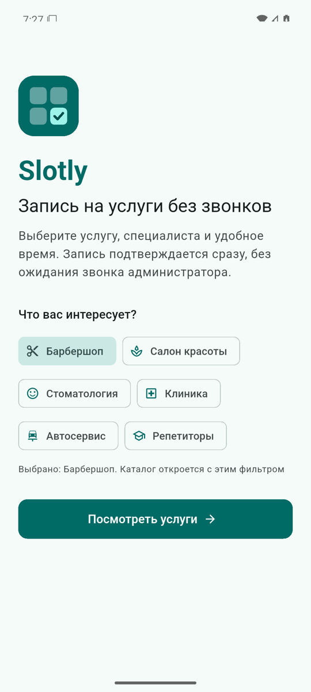
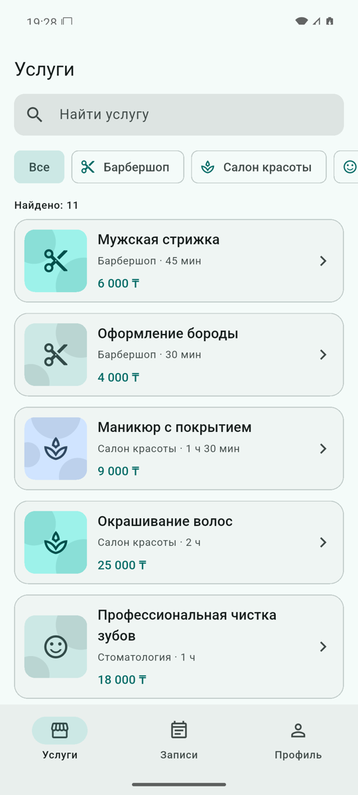
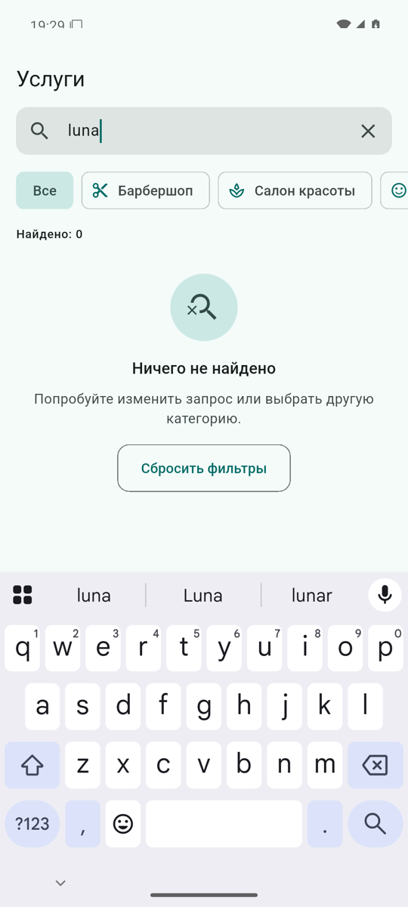
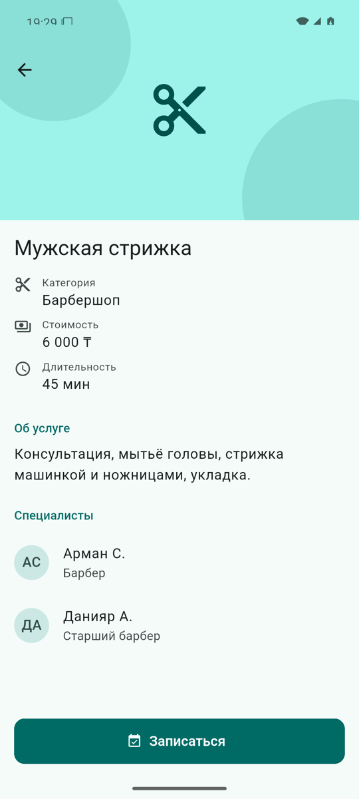
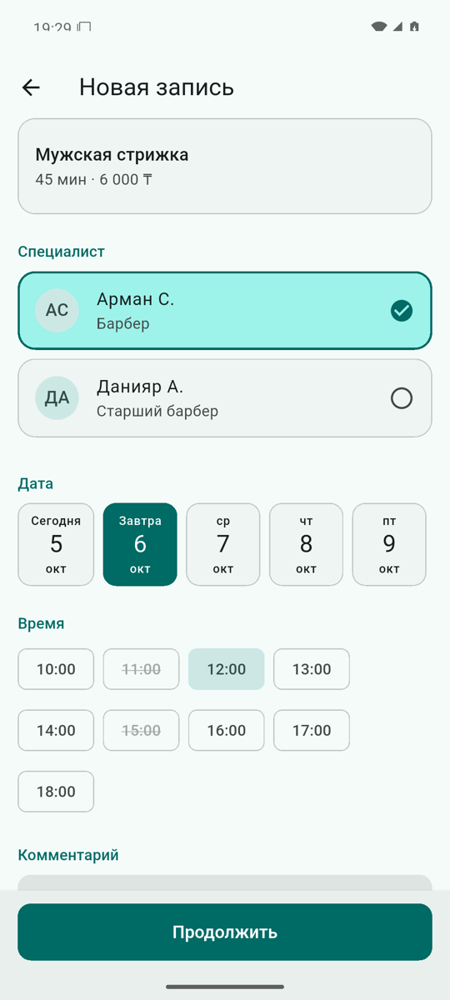
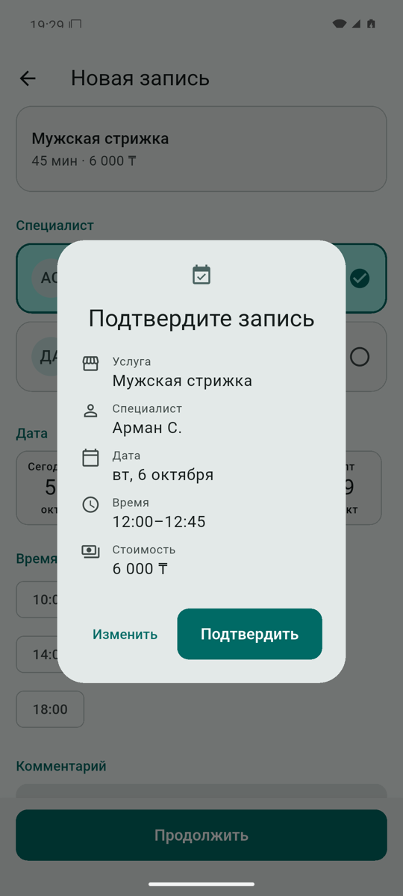
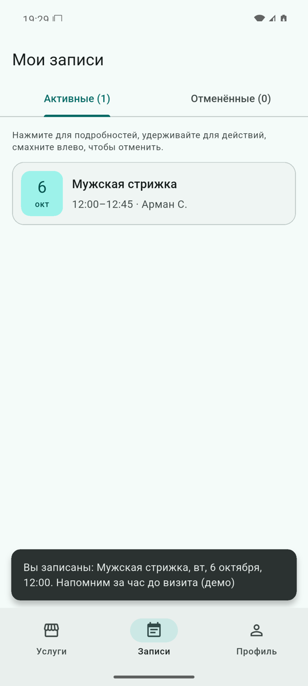
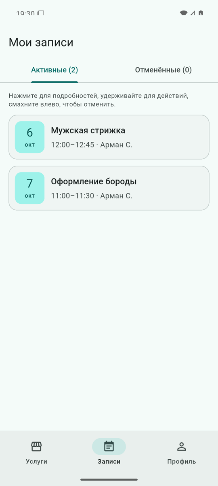
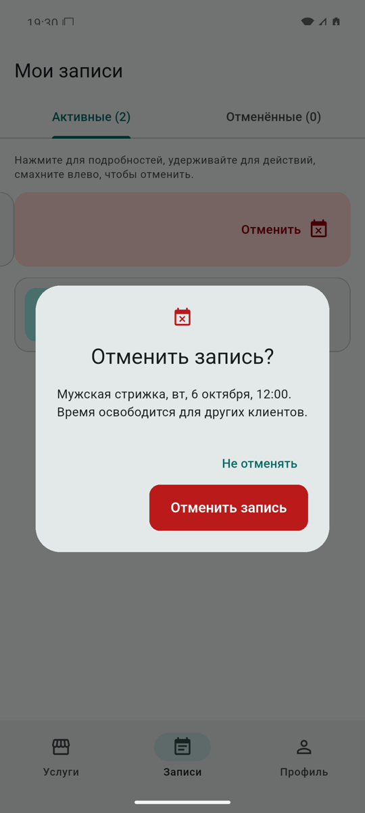
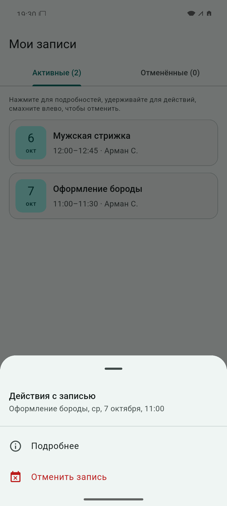
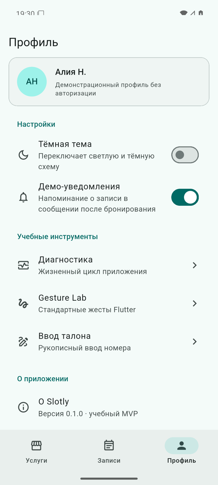
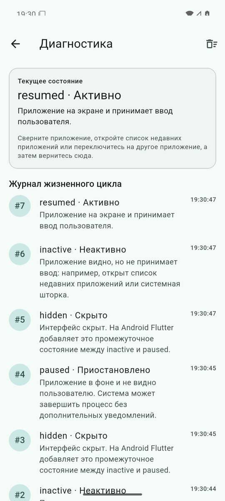
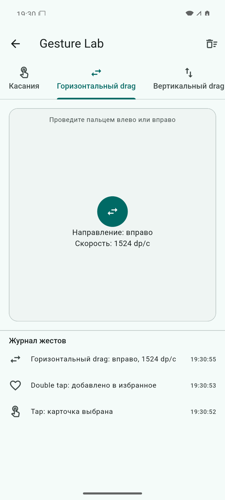
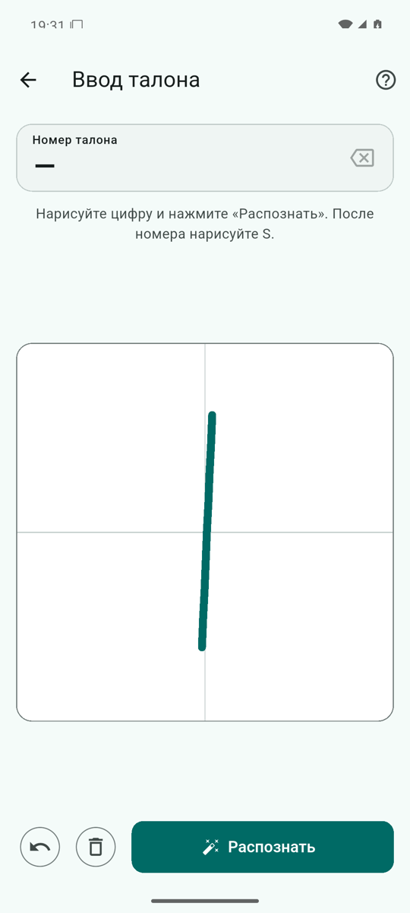
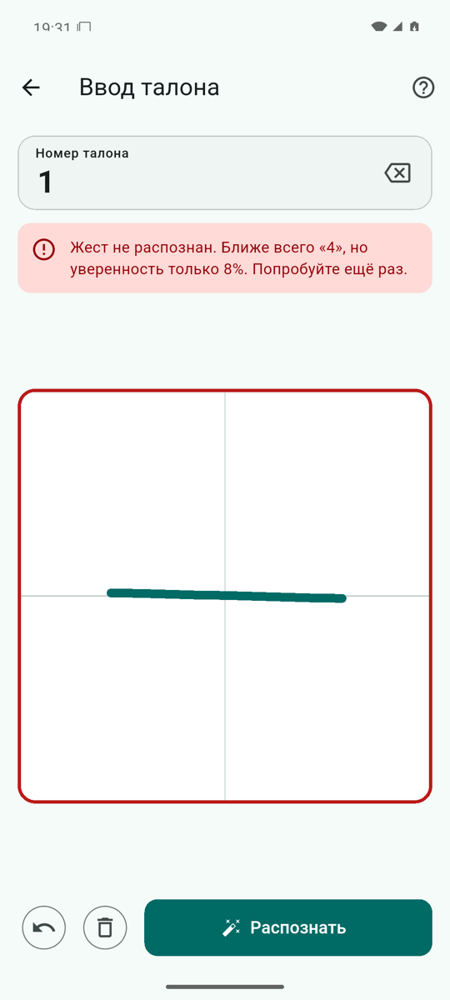
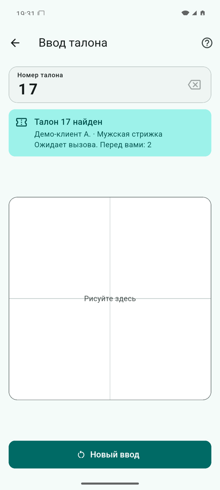
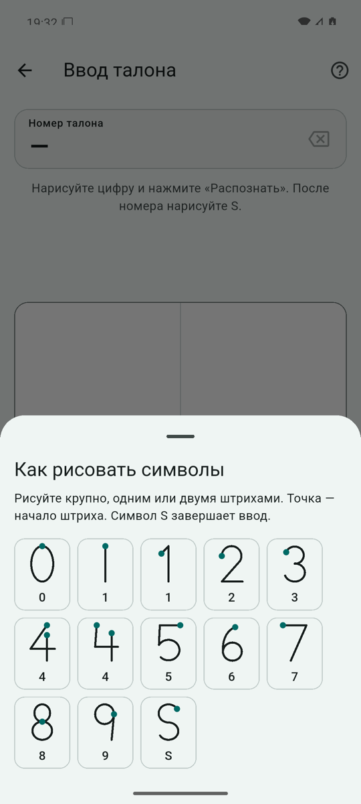
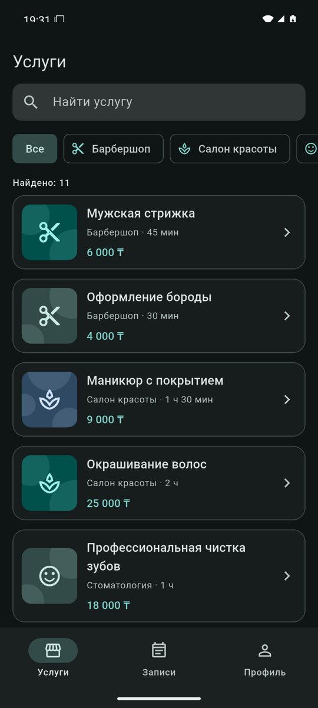
Технологии
| Область | Решение |
|---|---|
| Язык и фреймворк | Dart 3.13, Flutter 3.47 (stable), Material 3 |
| Платформа MVP | Android 7.0+ (minSdk 24), targetSdk 36 |
| Состояние | ChangeNotifier, setState |
| Навигация | Navigator, NavigationBar, IndexedStack |
| Данные | Демонстрационные данные в памяти за контрактами репозиториев |
| Тесты | flutter_test (unit, widget, golden), integration_test |
| CI | GitHub Actions: формат, анализ, тесты, debug APK |
| Дизайн | HTML-прототип, UI kit, SVG для Figma |
Что не входит в MVP
Регистрация и авторизация, реальный backend, база данных, платежи, push-уведомления, геолокация и карты, чаты, синхронизация, аналитика, ML-распознавание, мультитенантность. Эти направления описаны в плане развития; в коде под них оставлены только точки расширения.
Восьмидневный учебный план
Фактически работа выполнена за одну сессию, но история коммитов и теги повторяют эту структуру.
| День | Этап | Результат | Коммиты и теги |
|---|---|---|---|
| 1 | Окружение, проект, Git, тема, модели, дизайн-направление | Каркас и доменные модели | chore: bootstrap…, feat: add theme, domain models… |
| 2 | Welcome, каталог, демо-услуги, навигация | Первый рабочий сценарий | feat: add welcome and catalog flow |
| 3 | Lifecycle logger, диагностика, тесты, документация ЛР №1 | Лабораторная №1 | тег lab-1 |
| 4 | Детали услуги, форма, репозиторий, валидация | Запись через репозиторий | feat: implement booking flow |
| 5 | Диалог, SnackBar, «Мои записи», отмена, профиль, адаптивность | Лабораторная №2 | тег lab-2 |
| 6 | Gesture Lab, журнал жестов, обратная связь | Стандартные жесты | feat: add standard gesture lab |
| 7 | GesturePad, шаблоны, классификатор, MockTicketRepository | Лабораторная №3 | тег lab-3 |
| 8 | Интеграционные и golden-тесты, документация, скриншоты, APK, CI, прототип | MVP | тег v0.1.0 |
Команда и зоны ответственности
Распределение описывает, кто сопровождает и защищает модуль. Оценка трудоёмкости каждой зоны — условные 16 баллов; это внутренняя оценка баланса, а не прогноз оценки преподавателя.
| Участник | Зона | Страница |
|---|---|---|
| Кирилл | Каркас, навигация, тема, AppController, lifecycle и диагностика, «Мои записи», CI, сборка, архитектурная документация | team/kirill.html |
| Влад | Модели, репозиторий, демо-данные, поиск, форма записи, классификатор жестов, ввод талона | team/vlad.html |
| Ян | UI kit, прототип, welcome, каталог, детали, профиль, Gesture Lab, адаптивность, widget- и golden-тесты | team/yan.html |
О Git-истории. Первичная реализация выполнена и закоммичена одним авторизованным пользователем — владельцем репозитория. Распределение выше — это зоны ответственности и будущего сопровождения, а не авторство коммитов. Дальнейшие изменения каждый участник вносит от своего имени через ветки и pull request (см. CONTRIBUTING.md).